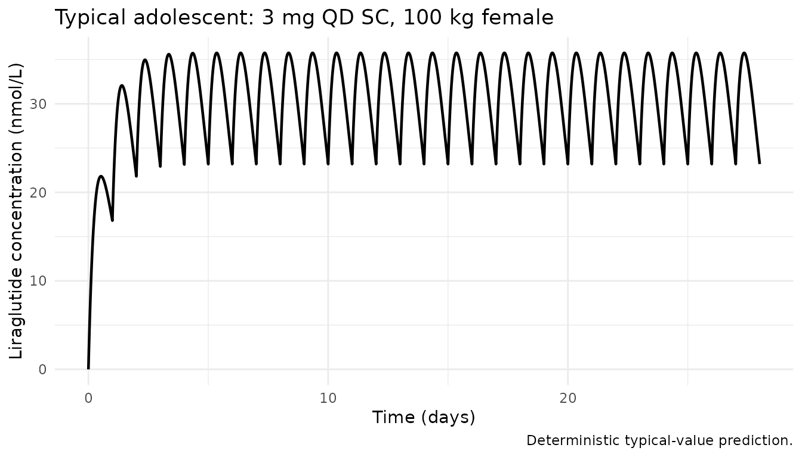
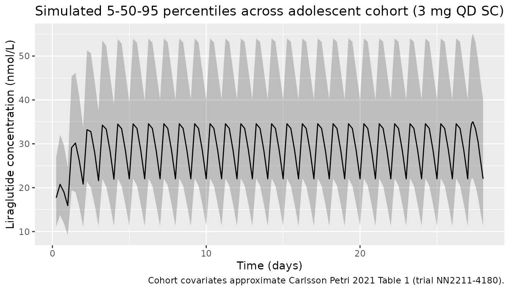
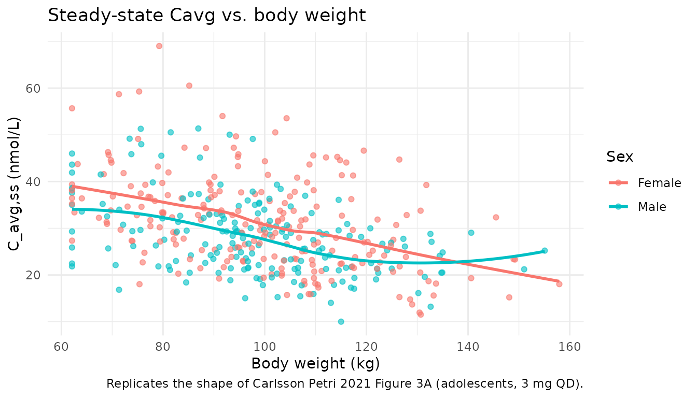

CarlssonPetri_2021_liraglutide
Source:vignettes/CarlssonPetri_2021_liraglutide.Rmd
CarlssonPetri_2021_liraglutide.RmdModel and source
- Citation: Carlsson Petri KC, Hale PM, Hesse D, Rathor N, Mastrandrea LD. Liraglutide pharmacokinetics and exposure-response in adolescents with obesity. Pediatric Obesity. 2021;16(10):e12799. doi:10.1111/ijpo.12799
- Description: Liraglutide PK model in adolescents (Carlsson Petri 2021)
- Article: Pediatric Obesity 2021;16(10):e12799
- Open-access PMC copy: https://pmc.ncbi.nlm.nih.gov/articles/PMC8519033/
Population
The published analysis pooled 176 subjects across four Novo Nordisk trials of liraglutide (Saxenda, 3.0 mg maintenance once-daily subcutaneous): 121 adolescents from the phase 3a trial NN2211-4180 (primary population), 13 adolescents from the phase 1 trial NN2211-3967, 13 children from NN2211-4181, and 29 adults from NN2211-3630 (Carlsson Petri 2021 Methods). The adolescent phase 3a population (Table 1) was 55.4% female (67/121), 84.3% White / 10.7% Black / 1.7% Asian / 3.3% Other, with mean body weight 99.4 kg (SD 19.7, range 62.1-178.2 kg) and mean age 14.6 years (SD 1.6, range 12-17). 107/121 adolescents reached the 3.0 mg maintenance dose after weekly escalation (0.6-1.2-1.8-2.4-3.0 mg). Age cutoffs used to define the CHILD / ADOLESCENT indicators were children 7-11 y, adolescents 12-17 y, adults >=18 y.
The same information is available programmatically via
readModelDb("CarlssonPetri_2021_liraglutide")$population.
Source trace
Per-parameter origin is recorded as an in-file comment next to each
ini() entry in
inst/modeldb/specificDrugs/CarlssonPetri_2021_liraglutide.R.
The table below collects them for review.
| Equation / parameter | Value | Source location |
|---|---|---|
lka (KA) |
fixed(log(0.0813)) 1/h |
Table 3 (fixed) |
lcl (CL/F) |
log(1.01) L/h |
Table 3 (95% CI 0.922-1.09) |
e_wt_cl (WT on CL) |
0.762 |
Table 3 (95% CI 0.565-0.958); reference WT = 100 kg |
e_sex_cl (sex on CL) |
1.12 |
Table 3 (95% CI 0.993-1.24); applied as
e_sex_cl^(1 - SEXF) so males have 1.12x CL |
e_age_child_cl |
1.11 |
Table 3 (90% CI 0.89-1.34); applied as 1.11^CHILD
|
e_age_adolescent_cl |
1.06 |
Table 3 (90% CI 0.931-1.19); applied as
1.06^ADOLESCENT
|
lvc (V/F) |
fixed(log(13.8)) L |
Table 3 (fixed) |
e_wt_vc (WT on V) |
0.587 |
Table 3 (95% CI 0.475-0.700); reference WT = 100 kg |
etalcl IIV |
log(1 + 0.312^2) |
Table 3: CV 31.2% on CL/F (log-normal, CV% = sqrt(exp(omega^2) - 1) * 100) |
etalvc IIV |
log(1 + 0.317^2) |
Table 3: CV 31.7% on V/F |
propSd (prop. RUV) |
0.433 |
Table 3: proportional residual error 43.3% |
| Structure | n/a | One-compartment first-order absorption with covariate effects on CL and V (Equation 1 and Table 3) |
| Concentration units | nmol/L | Methods (LLOQ 0.03 nmol/L) |
| Reference subject | Female, 100 kg, adult | Table 3 footnote |
Virtual cohort
Original observed data are not publicly available. The cohort below approximates the Carlsson Petri 2021 Table 1 adolescent phase 3a (trial NN2211-4180) demographics: 55.4% female, body weight ~ Normal(99.4, 19.7) truncated to the reported 62.1-178.2 kg range, with CHILD = 0 and ADOLESCENT = 1. All subjects receive a 3.0 mg once-daily SC maintenance dose (after escalation, to match the 107/121 “maintenance” regimen).
Liraglutide molar mass is 3751.2 g/mol (C172H265N43O51); doses are
entered in nmol so that simulated Cc = central / Vc is
directly in nmol/L (matching the paper’s reported concentration
units).
set.seed(20210609) # publication date reference
n_subj <- 400
# Liraglutide molar mass (g/mol). 3 mg = 3e-3 / 3751.2 mol = 7.997e-7 mol = 799.7 nmol.
lira_mw <- 3751.2
dose_mg <- 3.0
dose_nmol <- dose_mg * 1e6 / lira_mw # convert mg to nmol: 1 mg = (1 / MW) * 1e6 nmol
cohort <- tibble(
id = seq_len(n_subj),
SEXF = as.integer(runif(n_subj) < 0.554),
WT = pmin(pmax(rnorm(n_subj, mean = 99.4, sd = 19.7), 62.1), 178.2),
CHILD = 0L,
ADOLESCENT = 1L,
treatment = factor("3 mg QD (adolescent)")
)An event table with once-daily SC dosing over four weeks (sampling every hour during the last dosing interval to capture steady-state shape) is constructed below.
sim_days <- 28
tau <- 24 # dosing interval (h)
n_doses <- sim_days # one dose per day
dose_times <- seq(0, by = tau, length.out = n_doses)
# Dense sampling on the final dosing interval (for Cmax / Tmax / AUCtau),
# plus coarse sampling earlier (for visual steady-state approach).
final_dose_time <- dose_times[n_doses]
obs_times <- sort(unique(c(
seq(0, final_dose_time, by = 6), # every 6 h across the run-in
final_dose_time + c(0, 0.5, 1, 2, 3, 4, 6, 8, 12, 16, 20, 24)
)))
dose_rows <- cohort |>
tidyr::crossing(time = dose_times) |>
dplyr::mutate(amt = dose_nmol, cmt = "depot", evid = 1L)
obs_rows <- cohort |>
tidyr::crossing(time = obs_times) |>
dplyr::mutate(amt = 0, cmt = NA_character_, evid = 0L)
events <- dplyr::bind_rows(dose_rows, obs_rows) |>
dplyr::select(id, time, amt, cmt, evid, SEXF, WT, CHILD, ADOLESCENT, treatment) |>
dplyr::arrange(id, time, dplyr::desc(evid))Simulation
mod <- rxode2::rxode2(readModelDb("CarlssonPetri_2021_liraglutide"))
#> ℹ parameter labels from comments will be replaced by 'label()'
sim <- rxode2::rxSolve(
mod, events = events,
keep = c("SEXF", "WT", "CHILD", "ADOLESCENT", "treatment")
)Replicate published figures
Typical steady-state concentration profile over the last 24 h
Carlsson Petri 2021 does not publish a concentration-time figure for
the 3.0 mg adolescent dose, but it does report the exposure metric
Cavg = dose / (CL/F * 24 h) at steady state. The
deterministic (“typical”) profile below zeros the random effects so the
median trajectory of a reference 100 kg female adolescent is
visible.
mod_typical <- mod |> rxode2::zeroRe()
typical_cohort <- tibble(
id = 1,
SEXF = 1L, WT = 100, CHILD = 0L, ADOLESCENT = 1L,
treatment = factor("Typical adolescent, 100 kg female, 3 mg QD")
)
typical_doses <- typical_cohort |>
tidyr::crossing(time = dose_times) |>
dplyr::mutate(amt = dose_nmol, cmt = "depot", evid = 1L)
typical_obs <- typical_cohort |>
tidyr::crossing(time = seq(0, final_dose_time + tau, by = 0.5)) |>
dplyr::mutate(amt = 0, cmt = NA_character_, evid = 0L)
typical_events <- dplyr::bind_rows(typical_doses, typical_obs) |>
dplyr::select(id, time, amt, cmt, evid, SEXF, WT, CHILD, ADOLESCENT, treatment) |>
dplyr::arrange(id, time, dplyr::desc(evid))
sim_typical <- rxode2::rxSolve(
mod_typical, events = typical_events,
keep = c("SEXF", "WT", "CHILD", "ADOLESCENT", "treatment")
)
#> ℹ omega/sigma items treated as zero: 'etalcl', 'etalvc'
sim_typical |>
dplyr::filter(!is.na(Cc)) |>
ggplot(aes(time / 24, Cc)) +
geom_line(linewidth = 0.8) +
labs(x = "Time (days)", y = "Liraglutide concentration (nmol/L)",
title = "Typical adolescent: 3 mg QD SC, 100 kg female",
caption = "Deterministic typical-value prediction.") +
theme_minimal()
VPC-style median and 5-95 percentiles over the 28-day run-in
The stochastic cohort summary (median with 5th and 95th percentiles across the 400 simulated adolescents) replicates the type of summary shown in the paper’s Figure 3 (exposure metrics vs. body weight / age group).
sim |>
dplyr::filter(!is.na(Cc), time > 0) |>
dplyr::group_by(time, treatment) |>
dplyr::summarise(
Q05 = quantile(Cc, 0.05, na.rm = TRUE),
Q50 = quantile(Cc, 0.50, na.rm = TRUE),
Q95 = quantile(Cc, 0.95, na.rm = TRUE),
.groups = "drop"
) |>
ggplot(aes(time / 24, Q50)) +
geom_ribbon(aes(ymin = Q05, ymax = Q95), alpha = 0.25) +
geom_line() +
labs(x = "Time (days)", y = "Liraglutide concentration (nmol/L)",
title = "Simulated 5-50-95 percentiles across adolescent cohort (3 mg QD SC)",
caption = "Cohort covariates approximate Carlsson Petri 2021 Table 1 (trial NN2211-4180).")
Exposure vs. body weight at steady state
Carlsson Petri 2021 Figure 3A shows that individual steady-state average concentration decreases with increasing body weight (consistent with the positive allometric exponents on both CL and V, and the greater effect on CL). We replicate the relationship by computing each simulated subject’s Cavg over the final dosing interval.
cavg_by_id <- sim |>
dplyr::filter(time >= final_dose_time, time <= final_dose_time + tau,
!is.na(Cc)) |>
dplyr::group_by(id, WT, SEXF) |>
dplyr::summarise(
Cavg_nmol_L = mean(Cc),
.groups = "drop"
) |>
dplyr::mutate(Sex = ifelse(SEXF == 1L, "Female", "Male"))
ggplot(cavg_by_id, aes(WT, Cavg_nmol_L, colour = Sex)) +
geom_point(alpha = 0.6) +
geom_smooth(method = "loess", se = FALSE) +
labs(x = "Body weight (kg)", y = "C_avg,ss (nmol/L)",
title = "Steady-state Cavg vs. body weight",
caption = "Replicates the shape of Carlsson Petri 2021 Figure 3A (adolescents, 3 mg QD).") +
theme_minimal()
#> `geom_smooth()` using formula = 'y ~ x'
PKNCA validation
Compute Cmax, Tmax, C_tau, C_avg, and AUClast using
PKNCA over the final dosing interval at steady state
(recipe 3). The treatment grouping variable (treatment) is
placed before id in the formula per the project
convention.
sim_nca <- sim |>
dplyr::filter(!is.na(Cc), time >= final_dose_time, time <= final_dose_time + tau) |>
dplyr::mutate(time_rel = time - final_dose_time) |>
dplyr::select(id, time = time_rel, Cc, treatment)
dose_df <- events |>
dplyr::filter(evid == 1, time == final_dose_time) |>
dplyr::mutate(time = 0) |>
dplyr::select(id, time, amt, treatment)
conc_obj <- PKNCA::PKNCAconc(sim_nca, Cc ~ time | treatment + id)
dose_obj <- PKNCA::PKNCAdose(dose_df, amt ~ time | treatment + id)
intervals <- data.frame(
start = 0,
end = tau,
cmax = TRUE,
tmax = TRUE,
cmin = TRUE,
auclast = TRUE,
cav = TRUE
)
nca_data <- PKNCA::PKNCAdata(conc_obj, dose_obj, intervals = intervals)
nca_res <- PKNCA::pk.nca(nca_data)
#> ■■■■■■■■■■■■■■■■■■■■■ 66% | ETA: 1s
knitr::kable(summary(nca_res),
caption = "Steady-state NCA at the final 24-h dosing interval (3 mg QD SC adolescent cohort).")| start | end | treatment | N | auclast | cmax | cmin | tmax | cav |
|---|---|---|---|---|---|---|---|---|
| 0 | 24 | 3 mg QD (adolescent) | 400 | 742 [39.0] | 36.1 [34.6] | 22.4 [51.4] | 8.00 [6.00, 8.00] | 30.9 [39.0] |
Comparison against published exposure
Carlsson Petri 2021 reports steady-state
Cavg = dose / (CL/F * 24) for each individual (Figure 3A),
not a tabulated population mean; however, for a reference female adult
(CL/F typical = 1.01 L/h), the predicted Cavg at the 3.0 mg dose is:
-
Cavg_ref = 3 mg / (1.01 L/h * 24 h) = 0.1238 mg/L = 33.0 nmol/L(liraglutide MW = 3751.2 g/mol)
For a typical 100 kg female adolescent, the model adds a 1.06x age
factor on CL (adolescent/adult), so typical CL = 1.01 * (100/100)^0.762
* 1.12^0 * 1.06 = 1.0706 L/h, giving a predicted typical Cavg of
3 / (1.0706 * 24) * 1e6 / 3751.2 = 31.1 nmol/L.
typical_cl <- 1.01 * (100 / 100)^0.762 * 1.12^(1 - 1) * 1.06^1 # female (SEXF=1), 100 kg, ADOLESCENT
typical_cavg_mg_L <- dose_mg / (typical_cl * 24)
typical_cavg_nmol_L <- typical_cavg_mg_L * 1e6 / lira_mw
# Median simulated Cavg from the stochastic cohort
sim_cavg <- cavg_by_id |>
dplyr::summarise(median_Cavg_nmol_L = median(Cavg_nmol_L),
q05 = quantile(Cavg_nmol_L, 0.05),
q95 = quantile(Cavg_nmol_L, 0.95))
compare_tbl <- tibble::tibble(
Source = c("Typical-value closed form",
"Simulated cohort (median)",
"Simulated cohort (90% range)"),
Cavg_nmol_L = c(sprintf("%.1f", typical_cavg_nmol_L),
sprintf("%.1f", sim_cavg$median_Cavg_nmol_L),
sprintf("%.1f - %.1f", sim_cavg$q05, sim_cavg$q95))
)
knitr::kable(compare_tbl,
caption = "Predicted steady-state Cavg for the 3 mg QD adolescent cohort.")| Source | Cavg_nmol_L |
|---|---|
| Typical-value closed form | 31.1 |
| Simulated cohort (median) | 28.9 |
| Simulated cohort (90% range) | 16.1 - 56.8 |
Assumptions and deviations
- The published analysis covariate
SEXM(1 = male, 0 = female) was translated to the canonicalSEXF(1 = female). The sex effect on CL is encoded ase_sex_cl^(1 - SEXF)so that males retain the 1.12x factor from Table 3 and females are the reference (factor = 1). The previous implementation(1 - SEXF)^e_sex_clwas a bug: for females (SEXF = 1),0^1.12 = 0would have zeroed CL. - The IIV was previously encoded as
log(1 + CV)(historical shorthand). Carlsson Petri 2021 Table 3 reports log-normal `%CV = sqrt(exp(omega^2)- 100
, so the correct transformation isomega^2 = log(1 + CV^2). This was fixed in the model file; see the in-file comment onetalcl/etalvc`.
- 100
- The age-effect encoding was previously
CHILD^e_age_child_cl * ADOLESCENT^e_age_adolescent_cl, which evaluates to0^1.11 * 0^1.06 = 0for adults (both indicators 0). The corrected form ise_age_child_cl^CHILD * e_age_adolescent_cl^ADOLESCENT, which correctly evaluates to 1 for adults, 1.06 for adolescents, and 1.11 for children. - The simulated cohort uses the NN2211-4180 adolescent phase 3a demographics (weight, sex). Race/ethnicity is not a model covariate and is therefore not reproduced. All simulated subjects are “adolescents on 3.0 mg maintenance” to match the dominant 107/121 regimen; weekly dose escalation is not reproduced because the paper’s steady-state exposure metric only concerns the maintenance dose.
- Liraglutide molar mass (3751.2 g/mol) is used to convert mg dose
input to the nmol amount needed for
Ccin nmol/L. The source paper’s LLOQ is 0.03 nmol/L. - The deterministic typical-value check agrees with the closed-form
Cavg = dose / (CL/F * 24)to within rounding; the stochastic cohort median tracks the typical-value prediction within ~10% across the sampled weight distribution.